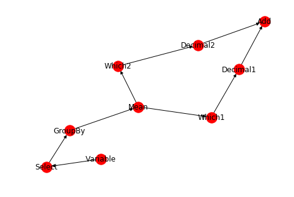

本文代码运行环境:
- windows10
- python3.6
这篇教程可以帮助您开始使用python NetworkX。NetworkX是一个Python包，用于创建，操作和研究复杂网络的结构，动态和功能。
NetworkX提供：
- 研究社会，生物和基础设施网络的结构和动态的工具;
- 适用于许多应用的标准编程接口和图形实现;
- 一个快速发展的多学科项目的环境;
- 现有数值算法的接口和用C，C ++和FORTRAN编写的代码;和
- 能够无痛地处理大型非标准数据集。
- 使用NetworkX，您可以以标准和非标准数据格式加载和存储网络，生成多种类型的随机和经典网络，分析网络结构，构建网络模型，设计新的网络算法，绘制网络等等。
创建图
创建一个空图:
1 | import networkx as nx |
根据定义，Graph是节点（顶点）的集合以及标识的节点对（称为边，链接等）。在NetworkX中，节点可以是任何可hashable对象，例如文本字符串，图像，XML对象，另一个图Graph，定制节点对象等。
节点
图可以以几种方式生长。 NetworkX包含许多图生成器功能和工具，可以以多种格式读写图形。为了开始，我们将看看简单的操作。您可以一次添加一个节点，
1 | g.add_node('Node-1') |
一次添加多个节点:
1 | g.add_nodes_from(['Node-2', 'Node-3']) |
在添加节点的时候, 你还可以添加节点的属性, 只要传入一个tuple: (node, node_attribute_dict)
1 | g.add_nodes_from([('Node-4', {'id':1, 'operation': 'add'})]) |
我们在之后的教程中会继续讨论节点的属性。
我们还可直接添加其他图的节点:
1 | h = nx.path_graph(10) |
现在图g包含了图h, 也就是图h实际上图g的一个节点。
边
图也可以通过增加边来生长:
1 | g.add_edge(1,2) |
也可以一次添加多个边:
1 | g.add_edges_from([(1, 2), (1, 3)]) |
也可以从其他图中添加边:
1 | g.add_edges_from(h.edges) |
当添加的边包含不存在的节点的时候, 程序并不会报错:
1 | g.add_edge(1000, 100000) |
目前为止, 查看一下图中到底有多少个节点和边:
1 | g.number_of_nodes() |
16
1 | g.number_of_edges() |
11
我们可以通过各种属性查看图的内部结构。四个基本图形属性有：G.nodes，G.edges，G.adj和G.degree。这些是图中节点，边，邻居（邻接）和节点度的集合。它们为图形结构提供了不断更新的只读视图。它们也类似于dict，因为您可以通过视图查找节点和边缘数据属性，并使用方法.items,. data=（'span'）迭代数据属性。如果您想要特定的容器类型而不是视图，则可以指定一个。这里我们使用列表，虽然set，dicts，tuple和其他容器在其他上下文中可能更好。
1 | g.nodes |
NodeView(('Node-1', 'Node-2', 'Node-3', 'Node-4', 0, 1, 2, 3, 4, 5, 6, 7, 8, 9, 1000, 100000))
1 | g.edges |
EdgeView([(0, 1), (1, 2), (1, 3), (2, 3), (3, 4), (4, 5), (5, 6), (6, 7), (7, 8), (8, 9), (1000, 100000)])
1 | g.adj |
AdjacencyView({'Node-1': {}, 'Node-2': {}, 'Node-3': {}, 'Node-4': {}, 0: {1: {}}, 1: {2: {}, 3: {}, 0: {}}, 2: {1: {}, 3: {}}, 3: {1: {}, 2: {}, 4: {}}, 4: {3: {}, 5: {}}, 5: {4: {}, 6: {}}, 6: {5: {}, 7: {}}, 7: {6: {}, 8: {}}, 8: {7: {}, 9: {}}, 9: {8: {}}, 1000: {100000: {}}, 100000: {1000: {}}})
1 | g.degree |
DegreeView({'Node-1': 0, 'Node-2': 0, 'Node-3': 0, 'Node-4': 0, 0: 1, 1: 3, 2: 2, 3: 3, 4: 2, 5: 2, 6: 2, 7: 2, 8: 2, 9: 1, 1000: 1, 100000: 1})
图可视化
NetworkX主要不是图形绘图包，但包含使用Matplotlib的基本绘图以及使用开源Graphviz软件包的接口。这些是networkx.drawing模块的一部分，如果已经安装在环境中, 可以将他们导入进来。
1 | import matplotlib.pyplot as plt |
1 | nx.draw(g, with_labels=True) |
上面的图片看起来有点丑, 因为缺少必要的边把节点连起来。以后的教程中会专门介绍图的绘制。
删除节点和边
你可以一次清理掉所有的边和节点, 不过这好像没有什么用:
1 | g.clear() |
当然可以单独删除一个或者多个节点, 当节点不存在的时候, 会报错:
1 | g.remove_node(2) |
---------------------------------------------------------------------------
KeyError Traceback (most recent call last)
d:\mysites\deeplearning.ai-master\.env\lib\site-packages\networkx\classes\graph.py in remove_node(self, n)
584 try:
--> 585 nbrs = list(adj[n]) # list handles self-loops (allows mutation)
586 del self._node[n]
KeyError: 2
During handling of the above exception, another exception occurred:
NetworkXError Traceback (most recent call last)
<ipython-input-22-4468ee9f3bbe> in <module>()
----> 1 g.remove_node(2)
2 g.remove_nodes_from([2,3,4])
d:\mysites\deeplearning.ai-master\.env\lib\site-packages\networkx\classes\graph.py in remove_node(self, n)
586 del self._node[n]
587 except KeyError: # NetworkXError if n not in self
--> 588 raise NetworkXError("The node %s is not in the graph." % (n,))
589 for u in nbrs:
590 del adj[u][n] # remove all edges n-u in graph
NetworkXError: The node 2 is not in the graph.
1 | g.add_node(1) |
使用边和邻居节点
上面有讲使用Graph.edges和Graph.adj来获取边和邻居节点, 不过我们还能使用切片的方式:
1 | g.add_node(1) |
获取节点1的邻居节点:
1 | g[1] |
AtlasView({2: {}})
获取边:
1 | g.edges[1,2] |
{}
你可以设置边的属性:
1 | g.edges[1, 2]['color'] = 'red' |
你可以以循环的方式输出所有的节点对, 你可以:
1 | for n, nbs in g.adj.items(): |
{2: {'color': 'red'}}
{1: {'color': 'red'}}
有向图
DiGraph类提供特定于有向边的附加属性，例如DiGraph.out_edges（），DiGraph.in_degree（），DiGraph.predecessors（），DiGraph.successors（）等。为了使算法能够轻松地处理这两个类， neighbor（）的功能等同于successors（），而degree会报告in_degree和out_degree的总和，即使有时可能会感觉不一致。
1 | dg = nx.DiGraph() |
0.5
1 | dg.nodes |
NodeView((1, 2, 3))
获取节点1的子节点:
1 | list(dg.successors(1)) |
[2]
获取节点1的父节点:
1 | list(dg.predecessors(1)) |
[3]
在有向图中, successors和neightbors有相同的功能:
1 | list(dg.successors(1)) == list(dg.neighbors(1)) |
True
绘制有向图:
1 | nx.draw(dg, with_labels=True) |
利用有向图实现计算图
类似tensorflow那样的计算图, 可以使用networkx来做一个原型, 这样我们可以把数据计算的流程可视化了:
1 | dg.clear() |
1 | dg.add_edges_from([ |
1 | nx.draw(dg, with_labels=True) |

1 | class Node: |
1 | n1=Node() |
1 | g.clear() |
1 | g.add_node(n1) |
1 | nx.node_link_data(g) |
{'directed': False,
'multigraph': False,
'graph': {},
'nodes': [{'id': <__main__.node at 0x17b6a1f84a8>}],
'links': []}
注意
本文由jupyter notebook转换而来, 您可以在这里下载notebook
有问题可以直接在下方留言
或者给我发邮件675495787[at]qq.com
请记住我的网址: mlln.cn 或者 jupyter.cn